화공기사(구)(구) (2005-05-29 기출문제)
1과목: 화공열역학
1. 그림과 같이 계가 일을 할 때 이 계의 수율은 어떻게 나타나는가?
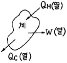
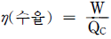
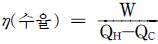
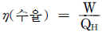
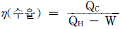
(정답률: 알수없음)

2. 다음 T-S선도에서 triple point 에 해당하는 것은?
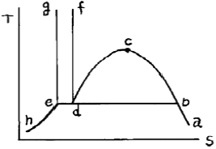
- 점
- 점 d
- 곡선 bcd
- 직선 bde
(정답률: 알수없음)
3. 다음 열역학적 사항 중 옳은 것 만으로 나열된 것은?
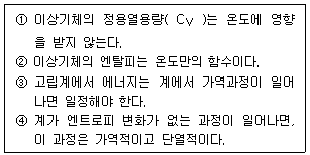
- ①, ③
- ①, ④
- ②, ③
- ②, ④
(정답률: 알수없음)
4. 32℃의 방에서 운전되는 냉장고를 -12℃로 유지한다. 냉장고로부터 2300cal의 열량을 얻기 위하여 필요한 최소 일 량은 몇 J인가?
- 1272
- 1443
- 1547
- 1621
(정답률: 알수없음)
5.
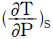
를 T, V 및 Cp 등으로 올바르게 나타낸 것은?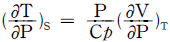
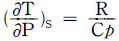
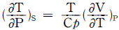
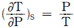
(정답률: 알수없음)
6. methane 70mole%, ethane 20mole%, n-propane 10mole%의 혼합기체가 있다. 이상 혼합물이라 생각하면 혼합물 중 methane의 fugacity는 몇 atm인가? (단, 혼합물과 같은 압력, 같은 온도의 순수한 methane의 fugacity는 19.0atm이다.)
- 0.133
- 1.33
- 13.3
- 133
(정답률: 알수없음)
7. 카르노 사이클에 의해 527℃와 127℃의 사이에서 작동하는 엔진이 527℃에서 4 kW의 에너지를 받았다면, 127℃에서 얼마의 에너지를 방출하겠는가?
- 0.96kW
- 1.44kW
- 2kW
- 2.4kW
(정답률: 알수없음)
8. 카르노 사이클(carnot cycle)의 순 일(net work)은? (단, QH:고열원 열량, QL:저열원 열량 )
- W=QL-QH
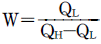
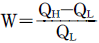
- W=QH-QL
(정답률: 알수없음)
9. PVn=상수인 폴리트로픽 변화(Polytropic change)에서 정용과정(定容過程)인 변화는? (단, n는 정수)
- n = 0
- n = ±∞
- n = 1
- n = k
(정답률: 알수없음)
10. 열역학 기본관계식 중 엔탈피(H)를 옳게 표현한 식은? (단, U =내부에너지, H =엔탈피, S =엔트로피, P=절대압력, V=부피)
- H ≡ U - PV
- H ≡ U + TS
- H ≡ U + PV
- H ≡ U - TS
(정답률: 알수없음)
11. 100K에서 1500K사이에서 이상기체의 포화증기압(Psat)이 다음 식으로 주어질 때 이상기체의 Clausius-Clapeyron 식을 이용한 증발잠열(△Hlv)값[J/molㆍK]은? (단, 기체상수 R = 8.314J/molㆍK이며, 동일 온도영역에서 증발잠열값은 일정하다.)
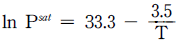
- -29.1
- -20.8
- 20.8
- 29.1
(정답률: 알수없음)
12. 계의 내부에너지가 100Btu감소하여 150Btu의 일이 외부에 전달되었다. 몇 ㎉의 열이 흡수 되었겠는가?
- 50㎉
- 250㎉
- 12.6㎉
- 63㎉
(정답률: 알수없음)
13. 화학 평형상태에서 CO, CO2, H2, H2O 및 CH4로 구성되는 기상계에서 자유도는?
- 3
- 4
- 5
- 6
(정답률: 알수없음)
14. 어떤 열역학적계의 변화를 다음의 T-S선도에 나타내었다. 어떤 과정으로 변화 하였는가?
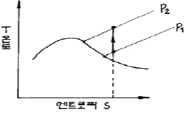
- 정온과정
- 정용과정
- 정압과정
- 단열과정
(정답률: 알수없음)
15. 총 Gibbs 자유에너지가 다음과 같이 표시되는 유체가 있다.
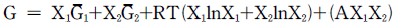
저온에서 이 유체는 2개의 상으로 나누어지나 일정온도 이상에서는 단일상을 유지한다. 조성에 상관없이 상분리가 일어날 수 있는 최대온도는?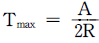
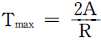
- Tmax=0
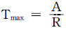
(정답률: 알수없음)
16. 어느 발명가가 열원으로부터 20kJ의 열을 받아 21kJ의 일을 생산해낼 수 있는 열엔진을 발명해냈다고 주장할 때 다음의 이 열엔진에 대한 설명으로 가장 올바른 것은?
- 이 열엔진은 열역학 제1법칙에 위배된다.
- 이 열엔진은 열역학 제2 법칙에 위배된다.
- 이 열엔진은 열역학 제1법칙과 제2법칙에 모두 위배된다.
- 이 열엔진은 열역학 제1법칙과 제2법칙을 모두 만족시킨다.
(정답률: 알수없음)
17. 다음 잉여특성에 관한 상관식 중 옳지 않은 것은? (단, H : 엔탈피, V : 용적, M : 열역학특성치)
- HE=ΔH(이상용액)
- VE=ΔV(이상용액)
- ME=M-M(이상용액)
- ΔME=ΔM
(정답률: 알수없음)
18. 일정한 열용량을 갖는 이상기체에 대하여 단열 가역과정에 대한 PV곡선의 기울기는? (단,
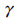
= Cp/Cv)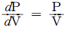
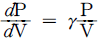
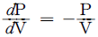
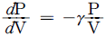
(정답률: 알수없음)
19. Clausius-Clapeyron 상관식을 통하여 보았을 때, 증기압과 가장 밀접한 관련이 있는 물성은?
- 점도
- 확산계수
- 열전도도
- 증발잠열
(정답률: 알수없음)
20. 이상기체에 대하여 일(W)은 다음과 같은 식으로 나타난다 이 계는 어떤 과정으로 변화하였는가? (단, q=열, P1 : 초기압력, P2 : 최종압력, T : 온도이다.)
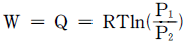
- 정온과정
- 정용과정
- 정압과정
- 단열과정
(정답률: 알수없음)
2과목: 화학공업양론
21. 표준상태에서 100L의 C2H6(g)를 완전히 액화한다면 몇 g의 C2H6(ℓ)이 되겠는가? (단, 이 C2H6 증기의 압축인자는 0.95이다.)
- 134g
- 141g
- 157g
- 163g
(정답률: 알수없음)
22. 청량음료병에 20℃, 5atm의 CO2기체가 액체위에 있도록 넣고 뚜껑을 닫은 다음 CO2분압이 4×10-4atm인 대기 중에서 병 뚜껑을 열었다. 대기와 평형에 도달했을 때의 액체중의 CO2농도는? (단, Henry constant=32atm/(mol/L) 이다.)
- 0.16 mol/L
- 0.159 mol/L
- 1.25×10 -5mol/L
- 1.28×10 -6mol/L
(정답률: 알수없음)
23. 화학공정을 통해 얻어진 자료가 연속적인 변수값을 나타낸다. 자료해석을 위해 평균값을 계산하려고 하는데 다음중 어떤 유형의 평균값을 이용하는 것이 가장 바람직하겠는가?
- 가중평균
- 기하평균
- 대수평균
- 산술평균
(정답률: 알수없음)
24. 그림과 같은 증류탑에서 에탄올과 물이 포함된 용액을 분리한다. 원액 100㎏당 탑위 생성물의 양은?
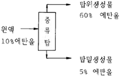
- 2.3㎏
- 9.1㎏
- 13.3㎏
- 18.7㎏
(정답률: 알수없음)
25. 무게로 40%의 수분을 함유한 목재를 수분함량이 10%가 되도록 건조했다. 원목재 1㎏당 증발된 물의 양은?
- 113.3g
- 223.3g
- 333.3g
- 443.3g
(정답률: 알수없음)
26. 내부에너지에 대한 설명으로 가장 거리가 먼 것은?
- 분자들의 운동에 기인한 에너지이다.
- 분자들의 전자기적 상호작용에 기인한 에너지이다.
- 분자들의 병진, 회전 및 진동운동에 기인한 에너지이다.
- 내부에너지는 일반적으로 온도 및 압력에 의해 결정된다.
(정답률: 알수없음)
27. 1Ib의 물이 1기압, 32℉에서 1기압, 260℉ 수증기로 변하는데 얼마의 열이 필요한가? (단, H2O의
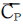
는 Btu/1b℉, 수증기의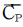
는 0.47 Btu/1b℉ 이다. 1기압 212℉에서의 증발열은 970.3 Btu/1b 이다.)- 109.3 Btu
- 117.4 Btu
- 1173 Btu
- 1275 Btu
(정답률: 알수없음)
28. 다음 설명중 옳지 않은 것은?
- 대기압이 항상 1기압은 아니다.
- 동일한 비중을 갖는 물질들의 1㎝3의 질량은 항상 같다.
- 정상상태는 일반적으로 시간에 따른 공정변수값의 변화가 없다.
- 일반적인 물질수지식은 "Input-OutPut+Generation-Consumption=Accumulation"이다.
(정답률: 알수없음)
29. 기체상수를 나타낸 것 중 옳지 않은 것은?
- 82.⑤7 cm3ㆍatm/gmoleㆍK
- 8314.34 J/kgmolㆍK
- 1.9872 cal/gmolㆍK
- 82.⑤7×10-6m3ㆍatm/kgmolㆍK
(정답률: 알수없음)
30. 기화잠열을 추산하는 식에 대한 설명으로 옳지 않은 것은?
- 포화압력의 대수값과 온도역수의 도시로부터 잠열을 추산하는 식이 Clausius-Clapeyron 식이다.
- 정상비등온도와 임계온도ㆍ압력을 이용하여 잠열을 구하는 식이 Watson식이다.
- 각 환산온도와 기화열로부터 잠열을 구하는 식이 Watson식이다.
- 정상비등온도와 임계온도ㆍ압력을 이용하여 잠열을 구하는 식이 Riedel식이다.
(정답률: 알수없음)
31. Ethylene glycol의 열용량 값이 다음과 같은 온도의 함수이고, 0℃∼100℃ 사이의 온도 범위내에서 존재한다고 하면, 열용량의 평균치를 얼마로 보면 좋겠는가? (단, Cp=0.55+0.001T)
- 0.60cal/g℃
- 0.65cal/g℃
- 0.70cal/g℃
- 0.75cal/g℃
(정답률: 알수없음)
32. acetone 14.8vol%를 포함하는 아세톤, 질소의 혼합물이 있다. 20℃, 745㎜Hg에서 비교 포화도는 얼마인가? (단, 20℃에서 아세톤 포화증기압은 184.8㎜Hg이다.)
- 17%
- 28%
- 53%
- 60%
(정답률: 알수없음)
33. 가역과정에 대한 설명으로 가장 옳은 것은?
- 에너지 수지는 가역과정에서만 취할 수 있다.
- 가역과정을 통한 계의 변화효율은 100%이다.
- 가역과정은 상태함수의 연속성을 요구한다.
- 가역과정은 변화에 큰 기전력차를 동반한다.
(정답률: 알수없음)
34. 습도 0.01㎏H2O/㎏ 건조공기인 공기온도가 25℃일 때 이 공기의 습비용(m3/㎏ 건조공기)은? (단, 공기압은 1atm이고 평균분자량은 29 이다.)
- 0.86
- 1.06
- 1.26
- 1.46
(정답률: 알수없음)
35. Dalton의 분압법칙에 대한 설명으로 가장 올바른 것은?
- 일정체적 및 일정몰수하에 각 성분기체의 압력의 합이 기체혼합물의 전압이 된다.
- 일정체적 및 일정온도하에서 각 성분기체의 압력의 합이 기체혼합물의 전압이 된다.
- 일정온도 및 일정압력에서 각 성분기체의 압력의 합이 기체혼합물의 전압이 된다.
- 이상기체뿐만아니라 실제기체에도 적용되는 법칙이다.
(정답률: 알수없음)
36. H2O(g) → H2+
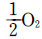
반응의 경우 291K 에서 ΔH°= 241.75 kJ㏖ -3이라면 301K 에서 ΔH°는 얼마인가? (단, 이 온도 범위에서 H2O(g), H2, O2의 몰당 열용량은 각각 33.56, 28.83, 29.12JK-1㏖ -1이다.)- 241506.1J㏖-1
- 241750.0J㏖-1
- 241848.3J㏖-1
- 241993.9J㏖-1
(정답률: 알수없음)
37. 200g의 CaCl2가 1g-mol 당 6g-mol의 비율로 공기 중의 수증기를 흡수할 경우에 발생하는 열은? (단, CaCl2의 분자량은 111이다.)
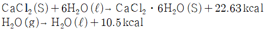
- 154 kcal
- 164 kcal
- 174 kcal
- 184 kcal
(정답률: 알수없음)
38. 다음 중 단위환산 관계를 옳게 나타낸 것은? (단, Δ는 온도차이를 의미한다.)
- Δ℃ = Δ1.8℉
- Δ˚R = Δ1.8K
- Δ℉ = Δ1.8˚R
- ΔK = Δ1.8℃
(정답률: 알수없음)
39. 다음 중 물질 수지(material balance)와 관계 있는 것으로만 나타낸 것은?
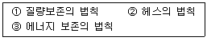
- ①
- ②
- ③
- ①, ②
(정답률: 알수없음)
40. 타이어의 냉압(cold pressure)은 -10℉에서 30psi이었다. 나중에 같은 계기에서 35psi로 압력을 읽었다면 최종온도는 얼마에 가까운가? (단, 기압은 15psi에서 일정, 부피변화는 무시한다.)
- 65℉
- -12℉
- 50℉
- 40℉
(정답률: 알수없음)
3과목: 단위조작
41. 유체의 대류열저항과 전도열저항의 비를 나타내는 무차원 수는?
- Nusselt number
- Prandtl number
- Stanton number
- Grashof number
(정답률: 알수없음)
42. 연못에서 5m 높이의 개방탱크에 내경이 5㎝ 인 관을 사용하여 3.13m/sec의 유속으로 물을 퍼 올린다. 유로의 마찰 손실을 무시할 때 펌프가 하는 일은 몇[kgfㆍm/kg] 인가?
- 5.5
- 9.9
- 55
- 99
(정답률: 알수없음)
43. 고-액 추출이나 액-액 추출에서 가장 중요한 문제는 추제의 선택인데, 추제가 갖추어야 할 조건으로 옳지 않은 것은?
- 선택도는 증류에서의 비휘발도와 유사한데 그 값이 커야한다.
- 값이 싸고 화학적으로 불활성이어야 한다.
- 비점 및 응고점이 낮으며 부식성이 적어야 한다.
- 유독성이 적고 추질과의 비중차가 작을수록 좋다.
(정답률: 알수없음)
44. 그림은 효용수에 따른 비용관계를 나타낸 것으로, 고정비의 관계를 나타낸 것은?
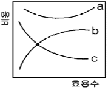
- a
- b
- c
- a + b
(정답률: 알수없음)
45. 0℃, 2기압에 있는 톨루엔 3ℓ를 27℃, 4기압으로 했을 때의 부피는?
- 0.65ℓ
- 1.65ℓ
- 2.65ℓ
- 3.65ℓ
(정답률: 알수없음)
46. 고급지방산과 같이 증기압이 낮은 물질을 비휘발성 불순물로부터 분리하는데 사용하는 가장 적당한 증류법은?
- flash 증류
- 추출 증류
- 수증기 증류
- 공비 증류
(정답률: 알수없음)
47. 콘크리트 벽의 두께가 10[㎝]이고, 바깥 표면의 온도는 5[℃]이고 안쪽 표면의 온도가 20[℃]일 때 벽을 통한 열손실은 얼마인가? (단, 콘크리트의 열전도도는 0.002[㎈/㎝ㆍsecㆍ℃]이다)
- 0.003[㎈/㎝2ㆍsecㆍ℃]
- 0.003[㎉/m2ㆍhr]
- 108[㎈/㎝2ㆍsec]
- 108[㎉/m2ㆍhr]
(정답률: 알수없음)
48. 다음 중 탑의 충전물이 아닌 것은?
- Raschig ring
- Berl saddle
- Intalox saddle
- Molecular sieve
(정답률: 알수없음)
49. 다음 식은 총괄 물질수지식이다. 밑줄 친 부분과 같은 것은? (단, M : 질량, V : 부피, P : 압력, t : 시간이다. )
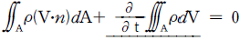
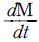
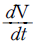
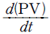
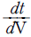
(정답률: 알수없음)
50. 어떤 주어진 온도에서 최대단색광 복사력 λmax로 표현하는데 이것이 절대온도에 반비례하는 법칙은?
- Kirchhoff의 법칙
- Wien의 전이법칙
- Fourier의 법칙
- Stefan-Boltzmann 법칙
(정답률: 알수없음)
51. 혼합에 영향을 주는 물리적 조건에 대한 설명으로 옳지 않은 것은?
- 섬유상의 형상을 가진 것은 혼합하기가 어렵다.
- 건조분말과 습한 것의 혼합은 한 쪽을 분할하여 혼합 한다.
- 밀도차가 클 때는 밀도가 큰 것이 아래로 내려가므로 상하가 고루 교환되도록 회전방법을 취한다.
- 액체와 고체의 혼합ㆍ반죽에서는 습윤성이 적은 것이 혼합하기 쉽고, 분체에서는 일반적으로 수분이 많은 것이 좋다.
(정답률: 알수없음)
52. 증류에 대한 설명으로 옳지 않은 것은?
- 환류비가 커질수록 단수 N도 많아진다.
- 비점이 비슷한 혼합물을 분리하는데 이용된다.
- 환류액량과 유출액량의 비를 환류비라한다.
- 환류비를 크게 하면 제품의 순도는 높아진다.
(정답률: 알수없음)
53. 비중이 0.945 인 액체가 내경이 2인치 관속으로 3㎝/sec의 속도로 흐른다. 액체의 점도가 0.9cP 일 때 Fanning 의 마찰계수는?
- 0.001
- 0.010
- 0.015
- 0.10
(정답률: 알수없음)
54. 건조에 대한 설명으로 옳지 않은 것은?
- 건조는 감율단계, 항율단계의 순으로 진행된다.
- 건조 시간은 자유 수분량과 관계가 있다.
- 한계수분량 이상에서 건조속도는 항상 일정하다.
- 건조가 기공에서의 확산에 의해 지배될 경우 건조 속도는 물질 두께의 제곱에 반비례한다.
(정답률: 알수없음)
55. 공극률(porosity)이 0.4 인 충전탑 내를 유체가 유효 속도(superficial velocity) 0.8m/s 로 흐르고 있을 때 충전탑 내의 실제 속도는?
- 0.8 m/s
- 0.32 m/s
- 0.50 m/s
- 2.0 m/s
(정답률: 알수없음)
56. 이동단위수(number of transfer unit)를 나타 내는 관계식은?
- GH/kya
- L/S/Kxa
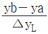
- V/S/Kya
(정답률: 알수없음)
57. 중량비로 벤젠 42%, 톨루엔 58% 인 혼합액을 25,000㎏/hr 로 연속 정류한다. 탑상액의 조성을 벤젠 94wt%, 탑저액의 벤젠은 8wt% 로 할 때 탑상제품의 양은?
- 9883㎏/hr
- 13700㎏/hr
- 6850㎏/hr
- 19766㎏/hr
(정답률: 알수없음)
58. 동일 직경의 수평 가열관 내를 1atm, 20℃ 로 들어가는 공기가 초속 6m/sec 이었다. 출구의 압력이 758㎜Hg 이고 온도가 80℃ 이었다면 출구에서의 공기의 속도는 몇 m/sec 인가?
- 7.25
- 7.55
- 8.25
- 8.55
(정답률: 알수없음)
59. 향류식 이중 열교환기에서 뜨거운 유체는 200°C에서 50°C 로 냉각되고 차거운 유체는 30°C 에서 150°C로 가열된다. 이 경우 뜨거운 유체와 찬 유체의 평균 온도차는?
- 30.0°C
- 31.6°C
- 32.7°C
- 35.0°C
(정답률: 알수없음)
60. 다중 효용 증발 조작의 목적으로 가장 옳은 것은?
- 제품의 순도를 높이기 위한 것이다.
- 장치비를 절약하기 위한 것이다.
- 열을 경제적으로 이용하기 위한 것이다.
- 제품제조 공정의 단순화를 위한 것이다.
(정답률: 알수없음)
4과목: 반응공학
61. 다음 그림과 같이 반응물과 생성물의 에너지 상태가 주어졌을 때 반응열 관계로서 옳은 것은?
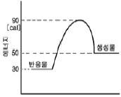
- 발열반응이며, 발열량은 20㎈ 이다.
- 발열반응이며, 발열량은 50㎈ 이다.
- 흡열반응이며, 흡열량은 20㎈ 이다.
- 흡열반응이며, 흡열량은 50㎈ 이다.
(정답률: 알수없음)
62. 액상 반응이 다음과 같이 병렬 반응으로 진행 된다면 단일 혼합류 반응기를 사용하여 R 을 많이 얻고 S 를 적게 얻으려면 A, B 의 농도는 어떻게 되어야 하는가?
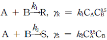
- CA는 크고, CB도 커야 한다.
- CA는 작고, CB는 커야 한다.
- CA는 크고, CB는 작아야 한다.
- CA는 작고, CB도 작아야 한다.
(정답률: 알수없음)
63. Arrhenius 법칙이 성립하면 어떻게 되겠는가?
- K 와 T 는 직선관계가 있다.
- ℓnk 와
 은 직선관계가 있다.
은 직선관계가 있다. - ℓnk 와 ℓn
 는 직선관계가 있다.
는 직선관계가 있다. - ℓn 와 T 는 직선관계가 있다.
(정답률: 알수없음)
64. 액상반응 A → R 은 1차 비가역 반응이다. 어느 유량과 농도의 반응물을 90% 전환시키기 위하여 20m3 의 플러그흐름 반응기가 필요하였다. 같은 유량과 농도의 반응물을 역시 90% 전환시키기에 필요한 혼합흐름반응기의 용량에 가장 가까운 것은?
- 20m3
- 40m3
- 60m3
- 78m3
(정답률: 알수없음)
65. ( A →R 인) 0차 반응의 적분법을 이용한 결과식은?
- CA-CAO=kt
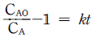
- CAO-CA=kt
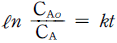
(정답률: 알수없음)
66. 1차 비가역 액상반응이 일어나는 관형 반응기에서 공간시간은 2min 이고, 전환율이 40% 였을 때 전환율을 90%로 하려면 공간 시간은 얼마가 되어야 하는가?
- 0.26min
- 0.39min
- 5.59min
- 9.02min
(정답률: 알수없음)
67. 순수한 액체 A 의 분해반응이 25℃ 에서 아래와 같을 때, A 의 초기농도가 2㏖/L이고, 이 반응이 혼합반응기에서 S 를 최대로 얻을 수 있는 조건하에서 진행되었다면 S 의 최대농도는?
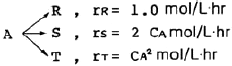
- 0.33㏖/L
- 0.25㏖/L
- 0.50㏖/L
- 0.67㏖/L
(정답률: 알수없음)
68. 액상 비가역 2차 반응 A → B 를 그림과 같이 환류식 플러그 흐름 반응기에서 연속적으로 진행시키고자 한다. 이 때 반응기 입구에서의 A의 농도 CAi 를 표현한 식은?
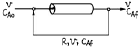
- CAi=

- CAi=

- CAi=RCAf+CAo
- CAi=CAf+RCAo
(정답률: 알수없음)
69. 1atm, 900℃에서 2N2O→2N2+O2로 분해되는 소멸속도는 금촉매 하에 반응물의 1차로 표시되고, 속도상수 kc가 0.013 s-1일 때, 압력항으로 표시되는 속도상수 kp(mol/cm3ㆍsㆍatm)는? (단, 기체상수 R=82.⑤atmㆍcm3/molㆍK)
- 2.75x10-6
- 1.35x10-7
- 1.12x10-8
- 1.10x10-9
(정답률: 알수없음)
70. 어떤 반응의 속도식이
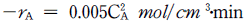
이다. 이 때 농도가 mol/ℓ, 시간이 hr로 주어졌을 때 반응속도 상수(ℓ/molㆍhr)는?- 0.0000⑤
- 0.0003
- 0.0⑤
- 0.03
(정답률: 알수없음)
71. 비균일상 반응에 대한 설명으로 가장 거리가 먼 것은?
- 상 사이의 물질 전달은 고려해야 한다.
- 여러 과정이 동시에 진행되고 있을 때 총괄속도는 r 총괄 = r1 = r2 = ㆍㆍㆍㆍㆍㆍ = rn 이다.
- 여러 과정의 속도식에 사용되는 단위는 반드시 같아야 한다.
- 총괄 속도식에는 중간체의 농도항이 포함되어 있으면 안된다.
(정답률: 알수없음)
72. 반응차수 n > 1 인 경우 이상 반응기의 가장 효과적인 배열은? (단, 플러그반응기와 작은혼합반응기의 부피는 같다.)
- 플러그반응기 - 큰혼합반응기 - 작은혼합반응기
- 큰혼합반응기 - 작은혼합반응기 - 플러그반응기
- 플러그반응기 - 작은혼합반응기 - 큰혼합반응기
- 작은혼합반응기 - 플러그반응기 - 큰혼합반응기
(정답률: 알수없음)
73. 불균일 촉매반응에서 유효계수(유효성인자)의 영향 인자로서 가장 거리가 먼 것은?
- 촉매의 세공 분포
- 담체의 강도
- 촉매의 평균 기공 크기
- 촉매의 입자 크기
(정답률: 알수없음)
74. 크기가 같은 반응기 2개를 직렬로 연결하여 A → R 로 표시되는 액상 1차 반응을 진행시킬 때 최종 전화율이 가장 큰 경우는?
- 관형반응기 + 혼합반응기
- 혼합반응기 + 관형반응기
- 관형반응기 + 관형반응기
- 혼합반응기 + 혼합반응기
(정답률: 알수없음)
75. 촉매에 대한 설명으로 옳지 않은 것은?
- 촉매는 반응의 활성화 에너지를 변화 시킨다.
- 적은 양의 촉매로서도 많은 양의 생성물을 만들 수 있다.
- 촉매는 정반응에 더 큰 영향을 준다.
- 촉매는 반응속도에만 관여하고 평형 관계에는 영향을 주지 않는다.
(정답률: 알수없음)
76.
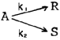
의 반응에서 생성속도의 비를 표현한 식은? (단, a1은 A → R반응의 반응차수이며 a2는 A → S반응의 반응차수이다. k1, k2 는 각각의 경로에서 속도상수이다.)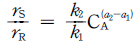
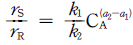
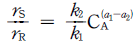
(정답률: 알수없음)
77. 다음과 같은 기상반응이 일어날 때, 반응기에 유입되는 기체 반응물 중 반응물 A는 50% 이다. 부피팽창계수 εA는?
- 0
- 0.5
- 1.0
- 1.5
(정답률: 알수없음)
78. 기초반응식이 + B = R + 일 때의 반응속도식은 로 알려져 있다. 만약 이 반응식을 정수로 표현하기 위하여 A + 2B = 2R + S 로서 표현하였을 때 반응 속도식으로 옳은 것은?
(정답률: 알수없음)
79. 다음 반응식 중 연속병행반응(series-parallel reaction)은?
- A + B → R
- A → R → S
- A → R, A → S
- A + B → R, R + B → S
(정답률: 알수없음)
80. 2 A + B → 2 C, 반응이 회분반응기에서 정압 등온으로 진행된다. A, B가 양론비로 도입되고, 불활성물이 없을 때 초기 전몰수에 대한 임의시간 전몰수의 비(Nt/Nto)를 바르게 표시한 것은?
- 1 - XA/3
- 1 + XA/4
(정답률: 알수없음)
5과목: 공정제어
81. 그래프의 함수와 그의 Laplace 변환된 형태의 함수가 맞게 되어 있는 항은?
(정답률: 알수없음)
82. Routh의 판별법에서 수열의 최좌열(最左列)이 다음과 같을 때 이 주어진 계의 특성방정식은 양의 근 또는 양의 실수부를 갖는 근은?
- 전혀없다.
- 1개 있다.
- 2개 있다.
- 3개 있다.
(정답률: 알수없음)
83. 의 고차계 공정에서의 단위계단 입력에 대한 공정응답 중 맞는 것은?
- 차수 n 이 커지면 진동응답이 생길 수 있다.
- 차수 n 이 커질수록 응답이 느려진다.
- 시상수 τ 가 클수록 응답이 빨라진다.
- 이득 K 가 커지면 진동응답이 생길 수 있다.
(정답률: 알수없음)
84. 다음 조절계(Controller)중 편차(offset)가 없는 것은?
- 비례 - 미분 조절계
- on - off조절계
- 비례 - 적분 조절계
- 비례 조절계
(정답률: 알수없음)
85. f(t) = = tu(t) 는 다음 중 어느 함수에 속하는가?
- step function
- expontial function
- ramp function
- transfer function
(정답률: 알수없음)
86. 전달함수{G(S)}가 G(S) = = 인 1차계에서 입력 x(t)가 단위순간(impulse)인 경우 출력 y(t)는?
(정답률: 알수없음)
87. G(S)H(S) = 인 특성방정식에서 이득여유(Gain Margine)가 -20㏈일 때 K값은?
- 20
- -20
- 10
- -10
(정답률: 알수없음)
88. 다음 함수의 라플라스 역변환값은?
- ate-bt
- atebt
(정답률: 알수없음)
89. 다음은 화학공장의 공정제어의 필요성에 대해 설명한 것이다. 잘못 설명된 것은?
- 균일한 제품을 생산하여 제품의 질을 향상시키기 위해
- 운전도중 안전사고의 예방을 위해
- 생산비 절감 및 생산성 향상을 위해
- 공장운전의 무인화를 위해
(정답률: 알수없음)
90. 물탱크에서 물이 관을 통해 밖으로 빠져나가는 양이 물탱크 안의 액체 높이의 제곱근에 비례할 때 이를 선형화 하여 현재의 액체 높이로 표현했을 때 올바른 것은?
- 현재의 높이의 반 x 높이
- 현재의 높이의 제곱근 x 높이
- 현재의 높이의 제곱근의 역수의 반 x 높이
- 현재의 높이의 제곱근의 반 x 높이
(정답률: 알수없음)
91. 다음 물리계 중 1차계가 아닌 것은?
- 가열로 안의 온도
- 물탱크 안의 액체 높이
- 수은 온도계의 온도
- 감쇠진동기의 위치
(정답률: 알수없음)
92. 다음의 함수를 라프라스 전환하면 어떻게 되는가?
(정답률: 알수없음)
93. 전달함수 G(s) = Kc(1 + s)인 비례 - 미분제어기의 주파수 응답에서 위상각이 45°이면 진폭비는 Kc의 몇 배인가?
- 1
- √2
- 2
(정답률: 알수없음)
94. 어떤 계의 단위계단 응답이 Y(t) = 일 경우 이 계의 단위충격응답(impulse response)은?
(정답률: 알수없음)
95. 2차 계의 경우 상승시간(rise time) 이란?
- 출력응답이 그의 최종값에 처음 도달할 때까지 요하는 시간이다.
- 출력응답이 그의 최종값의 + 5% 에 도달하는데 요하는 시간이다.
- 출력응답의 진동이 없어질 때까지 요하는 시간이다.
- 출력응답이 그의 최종치에 도달할 때까지 요하는 시간이다.
(정답률: 알수없음)
96. 다음 그림과 같은 나이퀴스트 선도(Nyquist diagram)로 부터 계의 안정도를 판별하면?
- Stable
- Conditionally Stable
- Unstable
- not Known
(정답률: 알수없음)
97. 어떤 계의 전달함수 일 때 이 계의 단위계단 응답(unit step response)은?
- 임계 감쇄이다.
- 자연 진동이다.
- 무감쇄 진동이다.
- 무진동 감쇄이다.
(정답률: 알수없음)
98. 다음 G(s) = 인 계의 시상수는 얼마인가?
- 10
- 100
(정답률: 알수없음)
99. 주파수 응답을 이용한 2차 계의 안정성을 판정하기 위한 이득 여유에 관한 설명 중 올바른 것은?
- 계가 안정하기 위해서는 Bode 선도 중 위상각이 -180도 일 때의 진폭비가 1보다 작아야 하므로 이득 여유는 1에서 이 때의 진폭비를 뺀 값이 된다.
- 계가 안정하기 위해서는 Bode 선도 중 위상각이 -180도 일 때의 진폭비가 1보다 작아야 하나 로그좌표를 사용 하므로 이득 여유는 이 때의 진폭비의 역수가 된다.
- 계가 안정하기 위해서는 Bode 선도 중 위상각이 -180도 일 때의 진폭비가 1보다 커야 하므로 이득 여유는 이때의 진폭비에서 1을 뺀 값이 된다.
- 계가 안정하기 위해서는 Bode 선도 중 위상각이 -180도 일 때의 진폭비가 1보다 커야 하나 로그좌표를 사용하므로 이득 여유는 이 때의 진폭비가 된다.
(정답률: 알수없음)
100. 스프링 상수가 선형적이며 이상적인 스프링 저울의 움직임을 수식으로 나타내면 다음 중 어느 것에 해당되는가?
- 선형 1차 미분방정식
- 선형 2차 미분방정식
- 선형 3차 미분방정식
- 선형 4차 미분방정식
(정답률: 알수없음)
6과목: 화학공업개론
101. 질산의 직접 합성반응은 다음과 같다. NH3 + 2O2 → HNO3 + H2O 반응 후 응축하여 생성된 질산 용액의 농도는 몇 % 인가?
- 68
- 78
- 88
- 98
(정답률: 알수없음)
102. 다음 중 축합반응으로 만들 수 있는 유기산은?
- 시트르산
- 말산
- 아세트산
- 락트산
(정답률: 알수없음)
103. 다음에 열거된 조건은 암모니아산화법에 의한 질산제조 시 어느 공정조건에 해당하는가?
- 상압공정
- 중압공정
- 고압공정
- 부분가압공정
(정답률: 알수없음)
104. 방향족 탄화수소를 SO3 계의 슬폰화제로 슬폰화 반응을 하는데 있어서 반응속도에 영향을 미치는 인자가 아닌것은?
- SO3 농도
- 압력
- 온도
- 촉매
(정답률: 알수없음)
1⑤. 에틸렌 제조의 주된 공업원료로 삼고 있는 것은?
- 경유
- 등유
- 나프타
- 중유
(정답률: 알수없음)
106. 다음은 건식 에칭법 중 플라즈마 에칭에 대한 설명이다. 틀린 것은?
- 라디칼 및 이온 반응종이다.
- 에칭상태는 등방성이다.
- Al도 에칭이 가능하다.
- 실리콘상의 SiO2 에칭이 불가능하다.
(정답률: 알수없음)
107. 다음 중 화학공업의 특성이 아닌 것은?
- 물리적 또는 화학적 변화가 일어난다.
- 화학장치를 가공수단으로 사용한다.
- 초기의 화학공업은 석유화학, 정유 등 장치 산업이 많았다.
- 의약품, 정밀화학 등은 다품종 대량생산 방식을 채택 한다.
(정답률: 알수없음)
108. 다음 중 석유류의 불순물(황,질소,산소)제거에 사용되는 방법은?
- Hydroforming process
- Visbreaking process
- Hydrotreating process
- Platforming process
(정답률: 알수없음)
109. 0.5 Faraday의 전류량에 의해서 생성되는 NaOH의 양은 몇 g 인가? (단, Na=23, H=1, O=16)
- 10
- 20
- 30
- 40
(정답률: 알수없음)
110. 다음 중 기하이성질을 나타내는 고분자가 아닌 것은?
- 폴리부타디엔
- 폴리클로로프렌
- 폴리이소프렌
- 폴리비닐알콜
(정답률: 알수없음)
111. 반도체 제조과정 중에서 식각공정 후 행해지는 세정공정에 사용되는 piranha 용액은?
- NH4OH + HF + H2O
- HCl + HF + H2O
- NH4OH + H2O2 + H2O
- HCl + H2O2 + H2O
(정답률: 알수없음)
112. NaOH 제조 시 격막식의 단점은?
- 제품의 순도와 온도가 높다.
- 수은법보다 조전압이 높아서 전력소모가 크다.
- 값이 비싼 수은을 사용한다.
- 농축비용이 많이들며 불순물로 순도가 낮다.
(정답률: 알수없음)
113. 다음 유기용매 중에서 물과 섞이지 않는 것은?
- CH3OCH3
- CH3COOH
- C2H5OH
- C2H5OC2H5
(정답률: 알수없음)
114. 카바이드는 석회질소비료의 제조원료로서 이의 함량은 아세틸렌 가스의 발생량으로 결정한다. 1㎏의 카바이드에서 250L(10℃, 760㎜Hg)의 아세틸렌 가스가 발생하였다면 카바이드의 함량은 백분율로 얼마인가? (단, 원자량은 Ca:40, C:12)
- 68.9%
- 75.3%
- 78.8%
- 83.9%
(정답률: 알수없음)
115. 암모니아 산화법에 의한 질산 제조에서 백금-로듐(Pt-Rh) 촉매에 대한 설명 중 옳지 않은 것은?
- 백금(Pt) 단독으로 사용하는 것보다 수명이 60% 정도 연장된다.
- 촉매 독물질로서는 비소, 유황, 인, 규소 등의 화합 물이다.
- 백금에 로듐(Rh) 함량이 10%인 것이 2%인 것보다 전화율이 낮다.
- 백금(Pt) 단독으로 사용하는 것보다 내열성이 강하다.
(정답률: 알수없음)
116. 휘발유를 구성하는 탄화수소 구조와 옥탄가와의 상관관계 를 잘못 설명 것은?
- 동일계 탄화수소의 경우 비점이 낮을수록 옥탄가가 높다.
- 파라핀계의 경우 측쇄가 많을수록 옥탄가가 낮다.
- 나프탈렌 및 방향족계에서는 측쇄가 길수록 옥탄가가 낮다.
- 동일 탄소수의 탄화수소에서는 방향족계 > 나프텐계 > 올레핀계 > 파라핀계의 순으로 옥탄가가 크다.
(정답률: 알수없음)
117. 인광석에 의한 과린산석회 비료의 제조공정에 있어서 화학 반응식 중 옳은 것은?
- CaH4(PO4)2 + NH3 → NH4H2PO4 + CaHPO4
- Ca3(PO4)2 + 4H3PO4 + 3H2O → 3[CaH4(PO4)2 ㆍH2O]
- Ca3(PO4)2 + 2H2SO4 + 5H2O → CaH4(PO4)2ㆍH2O + 2[CaSO4ㆍ2H2O]
- Ca3(PO4) + 4HCl → CaH4(PO4)2 + 2CaCl2
(정답률: 알수없음)
118. 요소의 제법에 대한 설명 중 옳지 않은 것은?
- 순환법은 CO2와 NH3의 배합비가 정확하여야 한다.
- 비순환법에서는 황산암모늄이 부산물로 생긴다.
- 순환법에서는 황산암모늄의 부산물이 생기지 않는다.
- 반순환법은 순환법과 비순환법의 이론을 모두 적용한 것이다.
(정답률: 알수없음)
119. 연료전지의 종류 중 이온전도성 산화물을 전해질로 이용하여 고온으로 운전하는 것이 특징이며 고온에서 운전하므로 써 이론에너지 효율은 저하되는 반면에 에너지 회수율이 향상되면서 화력 발전을 대체하고 석탄 가스를 이용한 고효율이 기대되고 있는 것은?
- 인산형 연료전지(PAFC)
- 용융탄산염 연료전지(MCFC)
- 고체산화물형 연료전지(SOFC)
- 고체분자형 연료전지(PEFC)
(정답률: 알수없음)
120. 아세틸렌에 무엇을 작용시키면 염화비닐이 생성되는가?
- HCl
- Cl2
- HOCl
- KCl
(정답률: 알수없음)